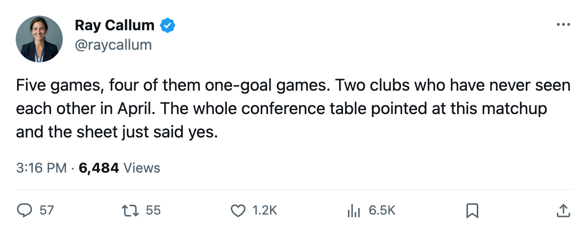

First Meeting: Dallas and Anaheim have not met in the postseason, and the regular season says it's close
5 games, 17-15 goals, 4 decided by one goal; Modano has 13, Fedorov has 13
 Ray CallumSenior correspondent · Home Ice Network
Ray CallumSenior correspondent · Home Ice Network
 Dallas Stars and
Dallas Stars and  Mighty Ducks of Anaheim have never met in the postseason. They meet for the first time in the next round, and the 5 regular-season games between them produced 17 goals for Dallas and 15 for Anaheim, with 4 of the 5 settled by one goal.
Mighty Ducks of Anaheim have never met in the postseason. They meet for the first time in the next round, and the 5 regular-season games between them produced 17 goals for Dallas and 15 for Anaheim, with 4 of the 5 settled by one goal.
The season series went 3-2-0 (+1 OT) to Dallas with 6 one-goal games across 11 total meetings when the Pacific division table counts all matchups. The closest series in the league's standings lists this one at 5 meetings, 4 one-goal games, and a 15-17 goal differential favoring Anaheim. Both records are accurate from different angles. They agree on one thing: these two teams decided most games by one goal all year.
What each side brings
Dallas:  Mike Modano88, 6 goals and 7 assists for 13 points in 10 games.
Mike Modano88, 6 goals and 7 assists for 13 points in 10 games.  Marty Turco94, 8-2, 1.56 GAA, .909 save percentage.
Marty Turco94, 8-2, 1.56 GAA, .909 save percentage.  Brenden Morrow84 at 11 points in 10.
Brenden Morrow84 at 11 points in 10.  Sergei Zubov83 adding 10 points from the blue line. The Stars scored 4 goals twice in the Phoenix series while allowing 1 in both of those games. They allowed 2 goals total across the final 3 games.
Sergei Zubov83 adding 10 points from the blue line. The Stars scored 4 goals twice in the Phoenix series while allowing 1 in both of those games. They allowed 2 goals total across the final 3 games.
Anaheim:  Sergei Fedorov90, 9 goals and 4 assists for 13 points in 12 games.
Sergei Fedorov90, 9 goals and 4 assists for 13 points in 12 games.  Vaclav Prospal80, 3 goals and 9 assists for 12 points in 12.
Vaclav Prospal80, 3 goals and 9 assists for 12 points in 12.  Aki Berg75, 2 goals and 6 assists for 8 points as a defenseman.
Aki Berg75, 2 goals and 6 assists for 8 points as a defenseman.  Jean-Sebastien Giguere97 went 7-4 with a 2.02 GAA, and
Jean-Sebastien Giguere97 went 7-4 with a 2.02 GAA, and  Ilja Bryzgalov81 entered one game and stopped 10 of 11 shots for a .923 save percentage in a relief appearance.
Ilja Bryzgalov81 entered one game and stopped 10 of 11 shots for a .923 save percentage in a relief appearance.  Andy McDonald76 had 9 points in 12 before an ankle injury landed between 2005-05-02 and 2005-05-04; the return date is 2005-05-11.
Andy McDonald76 had 9 points in 12 before an ankle injury landed between 2005-05-02 and 2005-05-04; the return date is 2005-05-11.
The wear-and-tear gap
Nobody has covered this matchup before because it hasn't existed. Dallas has 56 injury spells and 329 days lost across the regular season, the fewest among the 8 playoff clubs. Anaheim has 63 spells and 492 days lost, the second-most in the conference. The Ducks played 15 overtime games in the regular season, the most of any team in the league. They survived 4 of them in this postseason and lost 2.
Dallas has 4 men on injured reserve. Anaheim has 2: McDonald and Matthew Stajan67, a center out with a back injury through 2005-06-04. Both clubs will lean on their goaltenders the way the sheet says the season was decided: goaltending decides Aprils, special teams decide Novembers, and this one is April.
The first game is on the road for Anaheim. The next scheduled meeting in the week ahead shows a game on 2005-05-05 at Rexall Place, the one between Mighty Ducks of Anaheim and  Edmonton Oilers that already ended. The regular season's answer between these two was always one goal.
Edmonton Oilers that already ended. The regular season's answer between these two was always one goal.
